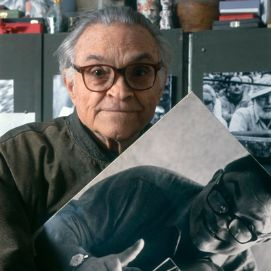

CC BY · Generalitat de Catalunya · Wikimedia Commons
Francesc Català-Roca
1922 (Valls) – 1998 (Barcelona)
Fotografia documental · Vida quotidiana catalana
Resum biogràfic
Fotògraf de la vida quotidiana catalana, va documentar Barcelona des dels anys 40 fins als 90. Col·laborà amb arquitectes de renom com Coderch i Moragas, aportant una mirada sensible als espais i a les persones que els habiten. Combina el document social amb una sensibilitat geomètrica i poètica única, fent de cada imatge una construcció conscient. La seva obra es conserva a l'Arxiu Nacional de Catalunya i a la Fundació Foto Colectania.
El seu segell
La composició com a poesia. Cada imatge és una construcció conscient: espera la llum, la figura i la geometria. El pescador per excel·lència de la fotografia catalana.
Composició
Molt deliberada i geomètrica. Espera la llum ideal i el gest humà precís. No dispara fins que els elements de la imatge —forma, llum, figura— no han trobat el seu lloc exacte en el visor.
Llum i exposició
Llum mediterrània, hores daurades, ombres dures i ben controlades. Sense flash mai. Treu el màxim profit de la llum natural disponible, especialment en els moments de llum rasant de primera i darrera hora.
Aproximació
Discret però present. Es posiciona i espera. Rarament s'apropa en moviment: primer troba el lloc, el punt de vista, la llum; i llavors espera que l'escena s'ompli amb les figures adequades.
Revelat
B/N ric, tonalitats suaus i molt treballades. Prints de gran qualitat. La minuciositat en el revelat i el positivat forma part del seu mètode tant com l'acte de disparar.
Gràcia, Barcelona, c.1960
Arxiu Nacional de Catalunya · anc.gencat.cat
© Francesc Català-Roca / ANC
Sardanes a Gràcia, Barcelona
Fundació Foto Colectania · fotocolectania.org
© Francesc Català-Roca / ANC
Barcelona, dècada dels 50
MUHBA · ajuntament.barcelona.cat/museuhistoria
© Francesc Català-Roca / ANC